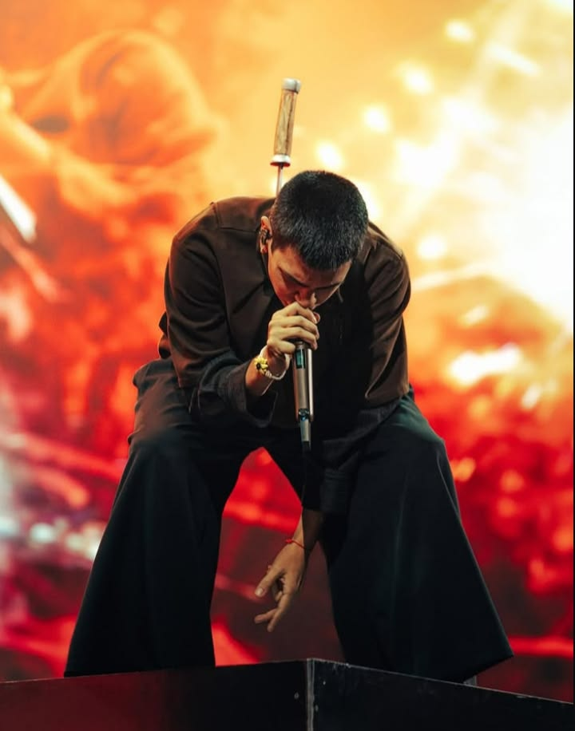

Milo J
Milo J es un artista argentino que, a través de sus canciones, logra transmitir emociones profundas y conectar con experiencias personales. Su música no solo me gusta, sino que también tiene un significado especial para mí.
Para mí, Milo J representa recuerdos, emociones y personas que ya no están. Sus canciones han logrado hacerme llorar y sentir cosas que a veces son difíciles de expresar con palabras. Especialmente Luciérnagas, una canción que cada vez que escucho me transporta a los momentos que compartí con mi abuelo, quien ya no está acá. Es como si por unos minutos pudiera volver al pasado y sentir nuevamente su presencia, recordar su voz, sus momentos y todo lo que significó para mí. Por eso, aunque escucharla puede doler, también es una forma de mantener vivos esos recuerdos y sentir que una pequeña parte de él sigue conmigo.
Milo J · Luciérnagas
Una canción que evoca recuerdos con mi abuelo. Cada escucha es un viaje al pasado.